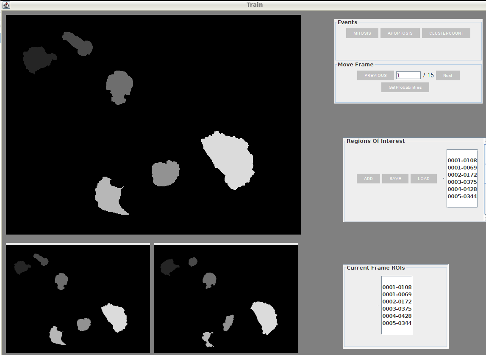

Developers
Student: Raghavendra Singh Chauhan
Mentor: Dimiter Prodanov Sumit Kumar Vohra
Organization:
International Neuroinformatics Coordinating Facility
Project description
The Active Segmentation platform for ImageJ (ASP/IJ) was developed in the scope of GSOC 2016 - 2018. The plug-in provides a general-purpose environment that allows biologists and other domain experts to use transparently state-of-the-art techniques in machine learning to achieve excellent image segmentation.
ImageJ is a public domain Java image processing program extensively used in life and material sciences. The program was designed with an open architecture that provides extensibility via plug-ins.
Cell Tracking has gained importance in recent times due to the growing extensive research in Biology. It has become evident that in order to take full advantage of the potential wealth of information hidden in the data produced by cellular experiments, visual inspection and manual analysis are no longer adequate. To ensure efficiency, consistency, and completeness in data processing and analysis, computational tools are essential. Of particular importance to many modern live-cell imaging experiments is the ability to automatically track and analyze the motion of cell objects in images recorded using time-lapse microscopy.
In this(2020) edition of Google summer of code I have worked on extending the Active-Segmentation Plug-In to perform Cell Tracking on Segmented Stack. The technique employed is based on the Viterbi Algorithm widely used in Digital Communications and Natural Language Processing. I would also like to acknowledge the research paper, from where I derive the foundational idea for my project, titled Global Linking Of Cell Tracks Using The Viterbi Algorithm by Klas E.G Magnusson, Joakim Jalden, Penney M. Gilbert & Helen M. Blau.
We start with a image stack and develop a Trellis of states i.e. Detections/Extractions that allows modelling of the images and cells in the form of a Graph.
Active Segmentation-Cell Tracking Fixed Event Based Training
Cell Tracking Trellis Of States Graph with edges laden with weights equivalent to scores corresponding to events. 
For more information on the project and idea you can refer here to my PPT on Viterbi Algorithm and Cell Tracking.